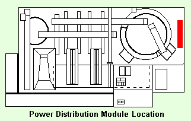
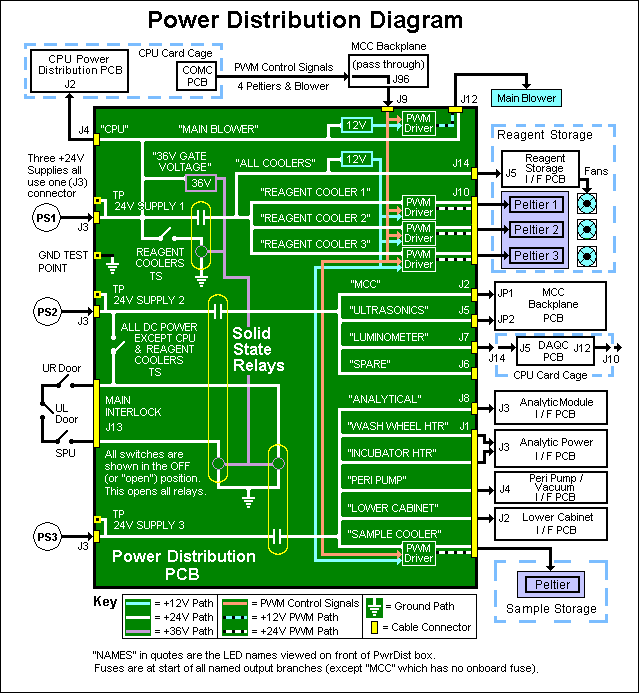
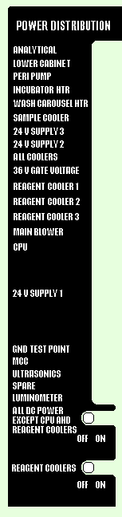
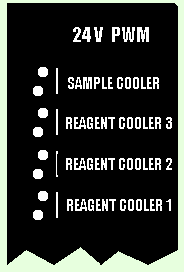

Power Distribution Module Operating Principles
Purpose
This document details the operating principles for the power distribution module
Module Function
- Power distribution of +24 V DC to each subsystem.
- LEDs and test points for diagnosing power distribution problems.
- Fuses for all distributed power branches (except to the MCC branch).
- Selective power removal for service and safety purposes, actuated by two toggle switches and three off-board interlock switches.
- Driving circuitry (PWM) for the four Peltiers and the main blower fan.
- Power monitoring for the user interface.
Location
The power distribution module is mounted on the right interior wall, just to the right of the wash-pick and-place module.

Operational Overview
Power Distribution:
The PCB receives power from the three +24 V DC supplies through connector J3 and distributes it (+24 V DC) to 17 output branches. Two onboard toggle switches and three off board interlock switches are used to control solid-state relays that remove power to various branches for service and safety purposes. The solid-state relays are powered by the 36 V GATE VOLTAGE branch using +24 V from PS1. Thus, a failure on PS1 causes the entire instrument to appear dead because the +36 V gate voltage is missing to the relays, causing them to remove power to all output branches (all LEDs are off, but voltage readings at the test points for 24 V SUPPLY 2 and 3 show +24 V DC).
LEDs and Fuses:
All power branches have externally visible LED indicators, and all branches (except MCC) have onboard fuses to protect the power supplies from short circuits on external loads. Only the WASH WHEEL HTR and INCUBATOR HTR branches have replaceable fuses. All other fuses auto-reset when power is removed.
Pulse Width Modulation (PWM) Power Drivers:
PWM power drivers for the three reagent storage Peltiers, the sample storage Peltier, and the main blower speed control are located on the power distribution PCB. The PWM drivers convert the PWM control signals (from the COMC PCB) to pulsed +24 V. The pulsed +24 V creates controlled current for the four Peltiers, and pulsed +12 V to control the fan speed circuit on the main blower.
Power Monitor Feedback:
Voltages from each of the three power supplies and each output branch are sampled through an onboard network of resistors and sent to the DAQC PCB through cable connector J7 (the same cable that delivers +24 V for the luminometer HVPS). The resistor network allows the DAQC PCB to detect precisely which branch has lost power based on the magnitude of the voltage change, and report it automatically to the user interface (this function has not been implemented in software).

Component Locations
The power distribution module consists of a PCB enclosed in a black metal cover with labeling on three sides for the various connectors, test points, LEDs, and toggle switches on the power distribution PCB.
Front End of the Power Distribution Module

| Label | Device | Description | Fuse |
|---|---|---|---|
| ANALYTICAL | LED | Indicates +24 V presence on ANALYTICAL branch. Output is through connector J8 to Analytical Module I/F PCB (J3). Power is used to drive mixer motor and ejector plate valve. | 1.85A
(F8) Auto-resetting |
| LOWER CABINET | LED | Indicates +24 V presence on LOWER CABINET branch. Output is through connector J1 to Lower Cabinet I/F PCB (J2). Power is used to drive compressor pumps, moisture bleed valve, and selector valves for wash buffer and waste bottles. | 1.85A
(F14) Auto-resetting |
| PERI PUMP | LED | Indicates +24 V presence on PERI PUMP branch. Output is through connector J1 to Peri Pump / Vacuum I/F PCB (J4). Power is used to drive three vacuum pumps only. All peri-pumps in system are driven by MCC branch, | 3A
(F3) Auto-resetting |
| INCUBATOR HTR | LED | Indicates +24 V presence on INCUBATOR HTR branch. Output is through connector J1 to Analytical Power I/F PCB (J3). Power is used to drive incubator heater. Branch has a replaceable fuse (F4). | 2.5A - 2AG
(F4) |
| WASH CAROUSEL HTR | LED | Indicates +24 V presence on WASH CAROUSEL HTR branch. Output is through connector J1 to Analytical Power I/F PCB (J3). Power is used to drive wash carousel heaters. Branch has a replaceable fuse (F15). | 2.5A - 2AG
(F15) |
| SAMPLE COOLER | LED | Indicates +24 V presence on SAMPLE COOLER branch used to power the sample storage Peltier circuit. Part of this +24 V output is converted by PWM driver to provide pulsed +24 V that creates current through Peltier. Outputs of +24 V and +24 V PWM are delivered to Peltier (directly) through connector J1. | 8A
(F5) Auto-resetting |
| 24 V SUPPLY 3 | Test Point | TP for measuring presence of +24 V DC input from Power Supply 3. | |
| 24 V SUPPLY 2 | Test Point | TP for measuring presence of +24 V DC input from Power Supply 2. | |
| ALL COOLERS | LED | Indicates +24 V presence on ALL COOLERS branch. Part of this branch is output through connector J14 to Reagent Storage I/F PCB (J5) to drive three cooling fans and BCR window heater on reagent storage module. Part of this branch is converted to +12 V to operate PWM drivers for four Peltiers (reagent and sample storage). | 0.9A
(F9) Auto-resetting |
| 36 V GATE VOLTAGE | LED | Indicates +24 V presence on 36 V GATE VOLTAGE branch. No external output for this power branch. Power is converted to +36 V for solid-state relays to selectively remove power to various branches when interlock or toggle switches are open. | 0.9A
(F1) Auto-resetting |
| REAGENT COOLER 1 | LED | Indicates +24 V presence on REAGENT COOLER 1 branch used to power circuit for reagent storage Peltier 1. Part of this +24 V output is converted by a PWM driver to provide pulsed +24 V that creates current through Peltier. Outputs of +24 V and +24 V PWM are delivered to Peltier 1 (directly) through connector J10. | 8A
(F10) Auto-resetting |
| REAGENT COOLER 2 | LED | Indicates +24 V presence on REAGENT COOLER 2 branch used to power circuit for reagent storage Peltier 2. Part of this +24 V output is converted by a PWM driver to provide pulsed +24 V that creates current through Peltier. Outputs of +24 V and +24 V PWM are delivered to Peltier 2 (directly) through connector J10. | 8A
(F11) Auto-resetting |
| REAGENT COOLER 3 | LED | Indicates +24 V presence on REAGENT COOLER 3 branch used to power circuit for Reagent Storage Peltier 3. Part of this +24 V output is converted by a PWM driver to provide pulsed +24 V that creates current through Peltier. Outputs of +24 V and +24 V PWM are delivered to Peltier 3 (directly) through connector J10. | 8A
(F12) Auto-resetting |
| MAIN BLOWER | LED | Indicates +24 V presence on MAIN BLOWER branch used to power main blower and control fan speed. Part of this +24 V is converted to +12 V and used by a PWM driver to provide pulsed +12 V to drive a fan speed control circuit on the blower. Outputs of +24 V and +12 V PWM are delivered to main blower through connector J12. | 8A
(F16) Auto-resetting |
| CPU | LED | Indicates +24 V presence on CPU branch. Output is through connector J4 to CPU Power Distribution PCB (J2). This power is used by all CPU card cage devices. | 3A
(F13) Auto-resetting |
| 24 V SUPPLY 1 | Test Point | Test point for measuring presence of +24 V DC input from Power Supply 1. | |
| GND TEST POINT | Test Point | Test point to be used as a ground connection when measuring power supply voltages. | |
| MCC | LED | Indicates +24 V presence on MCC branch. Output is through connector J2 to MCC Backplane (JP1). This power is used to drive:
Note: Fuses (auto-resetting type) are located on MCC backplane PCB to protect this PCB (Power Distribution) and Power Supply 2 from short circuits on any of listed MCC output loads.
|
No Fuse on PCB |
| ULTRASONICS | LED | Indicates +24 V presence on ULTRASONICS branch. Output is through connector J5 to MCC Backplane (JP2). Power is used by two ultrasonics PCBs to drive four reagent pipettor ultrasonic transducers. | 8A
(F2) Auto-resetting |
| SPARE | LED | Indicates +24 V presence on SPARE branch. Output is through connector J6. This branch is not used. | 3A
(F6) Auto-resetting |
| LUMINOMETER | LED | Indicates +24 V presence on LUMINOMETER branch. Output is through connector J7 to connector J14 on CPU card cage (through to J5 on DAQC PCB). This +24 V is routed out through DAQC PCB J12 (and CPU Card Cage J10) to luminometer (bottom connector) where it is used to drive luminometer HVPS. | 0.9A
(F7) Auto-resetting |
| ALL DC POWER EXCEPT CPU AND REAGENT COOLERS
OFF ON |
Toggle Switch | Switch for removing power to all branches except those branches powered by PS1 (= CPU, MAIN BLOWER, 36 V GATE VOLTAGE, ALL COOLERS, and three REAGENT COOLER branches). Allows reagent storage temperature control to continue while power is removed from other sections of instrument to perform repair or maintenance procedures. | |
| REAGENT COOLERS
OFF ON |
Toggle Switch | Switch for removing power to ALL COOLERS and three REAGENT COOLER branches. Removes power to three reagent storage Peltiers (and three fans) and PWM drivers for all four Peltiers. Incidentally, power is also removed from reagent loader BCR window heater.
Note: SAMPLE COOLER branch (and LED) remains powered, but its Peltier is not driven because +12 V for PWM driver is cut off.
|
Left Side Top of the Power Distribution Module
| Label | Connector | Description |
|---|---|---|
| REAGENT FANS | J14 | Connects +24 V output from ALL COOLERS branch to Reagent Storage I/F PCB (J5). Provides power to three cooler fans and reagent loader BCR window heater. |
| MAIN BLOWER | J12 | Connects +24 V (fan power) and +12 V PWM (speed control) to main blower fan (100% PWM = 0 V = full speed, 0% PWM = 12 V = fan is stopped). The % PWM is set by fan speed line in Specific.ini. |
| ANALYTICAL 24V | J8 | Connects +24 V output from ANALYTICAL branch to Analytical Module I/F PCB (J3). Provides power to mixer motor and ejector plate valve. |
| CPU 24V | J4 | Connects +24 V output from CPU branch to CPU Power Distribution PCB (J2). Provides power to all devices powered through CPU card cage, including:
|
| MAIN INTERLOCK | J13 | Connects to interlock switch harness (series connection of SPU and two upper cover interlock switches). Opening any one of these Interlocks cuts off +24 V power to these output branches:
|
| CPU CARD CAGE | J7 | Connects voltage monitor signals to DACQ PCB, and +24 V output from LUMINOMETER branch destined for luminometer HVPS. Cable connects to CPU Card Cage (J14) en route to DAQC PCB (J5). The +24 V for Luminometer HVPS exits DAQC PCB (J12) and connects through CPU Card Cage (J10) out to luminometer (bottom connector).
Note: This +24 V passes through (not used by) the CPU card cage and DAQC PCB.
|
| ULTRASONIC 24 V | J5 | Connects +24 V output from ULTRASONICS branch to MCC Backplane (JP2). Provides power for two ultrasonics PCBs to drive four reagent pipettor ultrasonic transducers. |
| SPARE | J6 | +24 V output from the SPARE branch that is not connected to anything. |
Left Side Center of Power Distribution Module
| Label | Connector | Description |
|---|---|---|
| REAGENT COOLERS | J10 | Connects +24 V and 24 V PWM outputs from three REAGENT COOLER branches to three reagent storage Peltiers (direct connections). |
| 24 V SUPPLIES | J3 | Input connector for three +24 V power supplies. |
|
VACUUM INC WASH SAMPLE COOLER |
J1 | Five distinct output branches pass through this connector to four separate destinations (connections):
|
| 24V MCC | J2 | Connects +24 V output from MCC branch to MCC Backplane PCB (JP1) to power all motors, sensors, and valves controlled by eight MCC PCBs (includes all peri-pump motors). This output also provides +24 V power for these devices:
|
| (Not labeled on cover) | J9 | Input connector for PWM signal inputs via ribbon cable from MCC Backplane PCB (J96), to control PWM drivers for Peltiers and main blower fan speed. Signals originate on COMC PCB and are passed through MCC Backplane. |
Rear of Power Distribution Module

| Label | Type | Description |
|---|---|---|
| 24 V PWM | Title | 24 V PWM = +24 V that is Pulse-Width Modulated with periodic 0 V pulses (0 V = connection to ground). Because one side of device (a Pelter in this case) is connected to constant +24 V DC, an electric current occurs whenever 0 V is applied to other side. Width (= time length) of 0 V pulse determines amount of current delivered per time interval, expressed as % or duty cycle. Thus, duty cycle describes proportion of time that 0 V is called for by PWM signal (controlled by altering 0 V pulse width). An increased duty cycle results in increased current through device. |
| SAMPLE COOLER | LED | Brightness indicates duty cycle applied to sample storage Pelter. The brighter the LED, the higher the duty cycle applied, which results in increased current and increased cooling. |
| Test Point | Test point for measuring PWM voltage applied to sample storage Peltier. A +24 V DC reading represents lowest duty cycle where no current flows through Peltier. A reading of 0 V DC represents highest duty cycle where a continuous current flows through Peltier. | |
| REAGENT COOLER 3 | LED | Brightness indicates duty cycle applied to Reagent Storage Pelter 3. The brighter the LED, the higher the duty cycle applied, which results in increased current and increased cooling. |
| Test Point | Test point for measuring PWM voltage applied to Reagent Storage Peltier 3. A +24 V DC reading represents lowest duty cycle where no current flows through Peltier. A reading of 0 V DC represents highest duty cycle where a continuous current flows through Peltier. | |
| REAGENT COOLER 2 | LED | Brightness indicates duty cycle applied to Reagent Storage Pelter 2. The brighter the LED, the higher the duty cycle applied, which results in increased current and increased cooling. |
| Test Point | Test point for measuring PWM voltage applied to Reagent Storage Peltier 2. A +24 V DC reading represents lowest duty cycle where no current flows through Peltier. A reading of 0 V DC represents highest duty cycle where a continuous current flows through Peltier. | |
| REAGENT COOLER 1 | LED | Brightness indicates duty cycle applied to Reagent Storage Pelter 1. The brighter the LED, the higher the duty cycle applied, which results in increased current and increased cooling. |
| Test Point | Test point for measuring PWM voltage applied to Reagent Storage Peltier 1. A +24 V DC reading represents lowest duty cycle where no current flows through Peltier. A reading of 0 V represents highest duty cycle where a continuous current flows through Peltier. |
Interacting Devices
- Main power supply (three +24 V DC supplies)
- Safety interlock switches (SPU and two upper doors)
- Analytical Module Interface PCB
- Analytical Power Interface PCB
- Lower Cabinet Interface PCB
- Peri Pump / Vacuum Interface PCB
- Reagent Storage Interface PCB
- MCC Backplane PCB
- CPU Power Distribution PCB
- CPU card cage
- DAQC PCB
- Luminometer
- COMC PCB
- Main blower
- All Peltiers